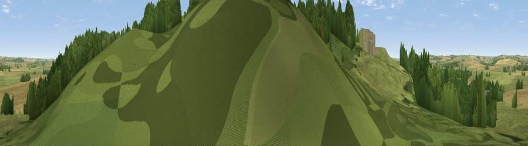

Viewpoint near Rockingham
#35099 in England · top 52% of its area beats it · near Rockingham · access?Where it is
The exact computed spot (SP 86867 91456). Click the marker for map links.
Public access: no public right of way or access land is recorded at this exact spot — it may be on private land. Computed from Natural England's CRoW access layer and OpenStreetMap rights of way — not the legal definitive map. Always verify locally.
The view, rendered

A 360° render of this exact spot computed from the terrain model, tree cover and land cover — summer colours, afternoon light, calibrated against photographs of famous viewpoints. Real trees, hedges and buildings will differ in detail.
The panorama
Grey silhouette: terrain skyline in each direction (720 bearings, Earth curvature and refraction included). Dashed green: skyline with trees (+15 m) and buildings (+8 m) as obstacles. Blue strip: how far the ground is visible on each bearing.
Where the view opens
Wedge length = distance to the farthest visible ground on that bearing (vegetation-aware). Rings at 10, 25 and 50 km.
What fills the view
43% grassland · 31% woodland · 23% cropland · 3% built-up
Angular shares of the visible panorama (visual magnitude), not map area. Landscape diversity 0.52 (0–1 Shannon).
Key numbers
More beautiful places nearby
The staircase of upgrades: each row has a higher view potential than everything closer. Driving times are estimates from straight-line distance, calibrated against real road routing — check an actual route before setting out.
| Place | Direction | Drive | Score |
|---|---|---|---|
| Viewpoint near Rockingham | ENE · 1 km | ~2 min | 48.7 |
| Viewpoint near East Norton | NW · 12 km | ~23 min | 49.6 |
| Robin-a-Tiptoe Hill | NW · 16 km | ~28 min | 54.1 |
| Whatborough Hill | NW · 18 km | ~31 min | 55.9 |
| Viewpoint near Billesdon | NW · 21 km | ~35 min | 56.8 |
| Viewpoint near Cold Newton | NW · 21 km | ~35 min | 57.3 |
| Viewpoint near Burrough on the Hill | NNW · 23 km | ~38 min | 66.0 |
| Old John | WNW · 40 km | ~59 min | 70.3 |
52.51408, -0.72138 · source: osm viewpoint · position refined by local search. Computed location — check access rights before visiting.